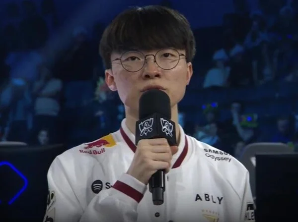

"BLG가 우리 만나서 안타까워" 페이커, 이례적 도발에 中 팬들 발칵! "큰소리치다 망신당할 것" : 네이트 스포츠

중국 매체 'IT즈자'는 7일(이하 한국시간) "디펜딩 챔피언 T1이 카르민 코프(KC)를 3-1로 꺾고 2026 리그 오브 레전드(LoL) 월드 챔피언십(월즈) 4강에 진출했다. 페이커는 4강 상대인 BLG가 안타깝다는 반응을 보였다"고 보도했다.
T1은 이날 KC를 세트 스코어 3-1로 제압하며 4강 진출에 성공했다.
이제 T1의 다음 상대는 중국 LPL 2번 시드 BLG다.
두 팀은 오는 9일 결승 진출을 놓고 맞붙는다.
그리고 페이커는 KC전 승리 직후 진행된 인터뷰에서 "BLG는 이번 월드 챔피언십에서 매우 강력한 모습을 보여줬다. LCK 팀들을 연달아 꺾었고, 충분히 우승할 만한 실력을 갖춘 팀이라고 생각한다"면서 "아쉽게 저희를 4강에서 만나서 아쉬울 것 같다"고 덧붙이며 자신감을 드러냈다.
평소 겸손한 페이커의 이런 도발성 발언은 중국에서도 화제가 됐다.
매체에 따르면 한 중국 팬은 "큰소리를 너무 많이 치면 나중에 망신당하기 쉽다. 나는 BLG가 이길 것 같다"고 지적했다.
또 다른 팬 역시 "페이커는 매년 저런 말을 한다"며 부정적인 반응을 보였다.
또 다른 팬은 "사실 올해 T1은 굉장히 약하다. 탑, 미드, 정글의 기량이 심각할 정도로 떨어졌다. 전혀 겁낼 필요 없다"고 주장했다.
이어 다른 팬도 "올해 BLG는 진짜 다르다", "올해는 왠지 BLG가 우승할 것 같다"며 자국 팀의 승리를 기대했다.
기인 캐년 좀 빌려올수 없나